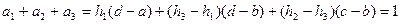
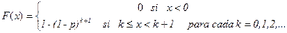

Contenido
- El Teorema fundamental de la transformación integral
- Otros métodos generales de generación de números aleatorios con distribución no uniforme
- Algunos métodos para distribuciones específicas
- Generación de números aleatorios con distribuciones empíricas
- Disponibilidad de métodos de generación y prueba en paquetes
- Conclusiones
Números Aletorios con Cualquier Distribución
Introducción
El comportamiento estocástico de muchos sistemas reales no puede ser siempre caracterizado por una distribución uniforme. De hecho aparecen mucho más frecuentemente otras distribuciones: normal, exponencial, Poisson, Binomial, etc.; en muchos casos ni siquiera una distribución teórica se ajusta bien a la aleatoriedad de los datos y es necesario trabajar con distribuciones empíricas. Por ello las tareas de simulación exigen en particular conocer de métodos generales que permitan generar números aleatorios con cualquier distribución así como técnicas de prueba de bondad de ajuste a una distribución arbitraria, entre las teóricas clásicas o una empírica.
Se comienza esta conferencia enunciando el Teorema fundamental de la transformación integral, que brinda una solución general a esta problemática. Se comentan algunos otros métodos generales, y métodos específicos para ciertas distribuciones. Finalmente se resume la disponibilidad de generadores y sistemas de prueba en algunos paquetes de software actuales.
El Teorema fundamental de la transformación integral
Sea X una variable con función de distribución acumulativa F(x)=Prob(X£x). Sin pérdida de generalidad suponemos que el conjunto de valores "posibles" de X, y por tanto, el dominio de F(x) es todo el intervalo real, y asignamos por F(x) probabilidad 0 a los valores o intervalos de valores realmente no probables. Así abarcamos el caso tanto de variables discretas y continuas. Con independencia del carácter discreto o continuo de X se tiene que F(x) es una función no decreciente, con valores en [0,1] y tal que:
pero F(x) no necesariamente es una función estrictamente creciente ni continua. De hecho, si X es discreta, F(x) es una función escalonada (desde 0 hasta 1) con puntos de discontinuidad en cada valor xi, para el cual pi=Prob(X=xi) > 0 (en estos puntos F(x) muestra al menos continuidad por la derecha). Aun siendo X continua, F(x) no tiene que ser estrictamente creciente, pues puede haber un subintervalos del eje real donde F(x) mantenga un valor constante.
De esta forma, dada una función de distribución cualquiera:
no existe en general la función inversa x=F-1(u). El Teorema de la transformación integral trabaja con la definición de una función F-1 que es "inversa por la izquierda" de F, definida por:
Puede verse claramente que F-1 es inversa de F por la izquierda
porque
pero F-1 no es inversa de F por la derecha. Más precisamente, ocurre que:
por la propia definición de F-1(u).
Después de observar que tanto F como F-1 son no decrecientes, la demostración del siguiente Teorema será clara:
Teorema fundamental de la transformación integral.
a) Sea U una variable con distribución uniforme en [0,1] y sea F: (-¥,¥)®[0,1] una función de distribución acumulativa cualquiera. Sea F-1 : [0,1] la inversa por la izquierda de F, definida como antes:
y sea X la variable aleatoria X=F-1(U). Entonces X tiene distribución F(x).
b) Recíprocamente, sea X una variable aleatoria con distribución F(x) y supongamos adicionalmente que F es continua y estrictamente creciente en un intervalo real a la izquierda del cual F(x)=0 y a la derecha del cual F(x)=1. Sea U la variable aleatoria U=F(X). Entonces U tiene distribución uniforme en [0,1].
Demostración:
a) Partimos de U con distribución uniforme, esto es Prob [U £ u] = u para cualquier uÎ [0,1]. Construimos X=F-1(U). Dado cualquier xÎ (-¥,¥), llamemos u=F(x) Î [0,1]. Se tiene
Entonces:
como se quería demostrar en este inciso
b) Partimos ahora de X con distribución F(x). Suponemos adicionalmente que F es estrictamente continua y creciente y construimos U=F(X). En tal caso, la inversa por la izquierda de F es también inversa por la derecha de F en el intervalo donde F(x) es diferente de cero y uno. Por tanto, si partimos de cualquier uÎ[0,1], obtenemos x=F-1(u) en dicho intervalo y se tendrá:
Ello permite deducir que:
Nótese que esta cadena de igualdades no es válida sin saber que F-1 es también inversa por la derecha de F. Así queda demostrado también el "recíproco" para distribuciones específicas. L.Q.Q.D.
El inciso a) de este Teorema es importante porque permite obtener una variable X con distribución cualquiera F(x) a partir de una variable U con distribución uniforme en [0,1]. Entonces en particular, si queremos generar una muestra de X con distribución F(x): x1, x2, ... , xn será suficiente generar una muestra de números aleatorios con distribución uniforme: u1, u2, ... , un y luego determinar:
donde F-1(u) es la inversa por la izquierda de F. Este resultado resuelve por tanto en general el problema de la generación de números aleatorios con cualquier distribución. Es especialmente útil cuando es factible encontrar una expresión para F-1(u) en términos de funciones elementales; pero es aplicable en última instancia utilizando métodos aproximados de cálculo de F-1(u) cuando F(x) tiene una expresión complicada e incluso cuando es una función de distribución empírica.
El inciso b) del Teorema tiene también una importancia práctica no trivial. En el caso de distribuciones continuas y estrictamente crecientes (como son muchas de las distribuciones continuas que se presentan en la práctica) la transformación F(x) permite convertirla en una distribución uniforme en [0,1]. Por tanto, si tenemos que probar que una serie de números: x1, x2, ... , xn se ajusta a la distribución F(x), bastará obtener los correspondientes números
y demostrar entonces que u1, u2, ... , un se ajustan a una distribución uniforme. Así, se resuelve el problema de la prueba de bondad de ajuste a un tipo de distribuciones bastante general: aquellas que son continuas y estrictamente crecientes en el intervalo donde son diferentes de cero. Para otras distribuciones, por ejemplo, discretas, se puede utilizar como prueba el test Chi-cuadrado. Para distribuciones que son continuas pero no estrictamente crecientes en su intervalo esencial de definición (donde son diferentes de las constantes 0 y 1), dicho intervalo puede ser subdividido en subintervalos y sobre ellos calcular frecuencias esperadas (de acuerdo con F(x)) y comparar con las frecuencias observadas en la muestra, a través también de un test Chi-cuadrado.
Ejemplos:
1) Supongamos que se desea buscar una muestra de números aleatorios con distribución normal con media m y varianza s2. En este caso:
que es continua y estrictamente creciente en todo el eje real. Dicha función y su inversa F-1 no son expresables en términos de funciones elementales; pero se encuentran tabuladas y su cálculo numérico aproximado se encuentra implementado en muchos paquetes, e incluso en lenguajes de programación (como función error).
Lo cierto, es que para obtener los números aleatorios con la distribución deseada, generamos (por cualquiera de las vías formuladas en la conferencia anterior), n números aleatorios con distribución uniforme en [0,1]:
y luego determinamos xi de manera que:
haciendo uso de las implementaciones de esta función o su inversa en el lenguaje de programación. Ello equivale a buscar en una tabla de la distribución normal normalizada, el punto crítico de esta distribución con significación de una cola igual a 1-ui. Recíprocamente, si queremos saber si: x1, x2,..., xn son números aleatorios con distribución Normal (m,s2), calculamos
y probamos que u1, u2,..., un son aleatorios con distribución uniforme en [0,1]
2) Supongamos ahora que queremos generar N números aleatorios: x1, x2, ... , xN con distribución Binomial(n,p)
En este caso, la variable a muestrear es discreta con valores posibles X=0, 1,2,..., n. La probabilidad de cada uno de estos valores se determina por:
La función de distribución acumulada F(x) para esta distribución tiene un carácter escalonado:
Entonces, buscamos los N números con distribución uniforme: u1, u2,..., uN y para cada i=1,2,..., N, definimos xi (que debe ser uno de los valores posibles de: 0, 1,2,...n) de manera que
Esto supone encontrar k=k (ui), de manera que se pueda localizar ui en un intervalo semiaberto de la forma:
(Si k=0, la suma del miembro izquierdo de la desigualdad anterior, debe considerarse como 0). Entonces el número xi correspondiente es igual a k. En efecto, para todo x tal que k£x<k+1, ocurre que F(x)=p0+p1+...+pk ³ ui y k es el menor de los valores de x que satisface lo anterior. Por ello xi=k=k(ui).
Observe que la localización de uiÎ[0,1] en un tal subintervalo dependiente de k es siempre posible y única porque las sumas parciales:
constituyen una partición del intervalo semiabierto (0,1]. La única duda posible podría ser que ui fuera 0 para algún i pero esto tiene probabilidad cero. De ser así, probablemente se trate de un número de la forma 0+x con x>0 pero suficientemente pequeño para no ser precisable en la aritmética. Entonces, se toma el k correspondiente igual a 0.
Nótese además que por ser en este caso F(x) una distribución discreta, no es aplicable el inciso b) del Teorema. De hecho, debe quedar claro en el ejemplo, que X=F-1(U) tiene la distribución binomial esperada, pero si a esta variable le aplicamos F: U'=F(X), no recuperamos la variable U uniformemente distribuida inicial pues U' alcanza de hecho, sólo un conjunto finito de valores entre 0 y 1: 0, p0, p0+p1, p0+p1+p2,...,1. Si se quisiera probar que un conjunto dado de valores x1, x2,..., xN (con cada xi=0, 1,2,..., n), tienen distribución Binomial(n, p), lo correcto es medir la frecuencia fi de cada valor xi y compararla con la frecuencia esperada pi*N utilizando el test Chi-cuadrado.
La idea del ejemplo 2 es fácilmente generalizable a cualquier variable discreta con un número finito o contable de valores posibles. Estos ejemplos son suficientes para ilustrar la potencia general del Teorema fundamental de la transformación integral. No obstante, no es el único método para generar números aleatorios con una distribución dada. Hay otros métodos generales y hay otros (algunos muy ingeniosos) válidos para distribuciones específicas que pueden ser más eficientes que el cálculo de F-1(u) o que se derivan de éste en una forma fácilmente implementable.
Para sólo citar un ejemplo, supóngase que se quiere generar números aleatorios acorde con la distribución F(x)=x2 para 0£x£1. En este intervalo, F tiene una inversa F-1(u)=u1/2. La aplicación del Teorema sugeriría entonces tomar N números aleatorios con distribución uniforme y a cada uno, calcularle la raíz cuadrada, para obtener los números aleatorios con la distribución deseada. Una alternativa ingeniosa es generar parejas de números aleatorios independientes: (U1, U2) y tomar X=max (U1, U2). En efecto,
Así, surge la regla alternativa de que para generar N números aleatorios con distribución F(x)=x2, es suficiente generar N parejas de números aleatorios independientes con distribución uniforme y de cada pareja tomar el máximo.
Otros métodos generales de generación de números aleatorios con distribución no uniforme.
Además del método general, vía el Teorema fundamental de la transformación integral, se han discutido otros métodos de generación de números aleatorios de cierto grado de generalidad. Aquí se comentan los enunciados en [1]:
Método del rechazo
Supongamos que se quiere seleccionar un número aleatorio x, a£x£b con distribución continua F(x) que es diferente de cero y 1 en este intervalo (F(x)=0 para x<a y F(x)=1 para x³b) y que F(x) es continua y con derivada acotada f(x)=F'(x) con K=max {|f(x)| xÎ [a, b]}. La función derivada f(x) es la función de densidad de probabilidad (fdp) y puede ser "escalada" en la forma: k* f(x) donde k=1/K, para que tome valores en [0,1]. La idea del método es generar una pareja de números aleatorios: (u1, u2) cada uno de los cuales tiene distribución uniforme en [0,1]. A partir de u2 se genera el número x1 por una transformación lineal que lo lleva al intervalo [a, b]:
Si el número x1 fuera siempre escogido como salida del generador, resultaría distribuido uniformemente en [a, b] porque la transformación lineal convierte distribuciones uniformes en uniformes; pero el número x1 es seleccionado a veces como salida y otras es rechazado (de ahí el nombre de "método de rechazo"). Concretamente, x1 se acepta como salida del generador si y sólo si u1£k*f(x1). Se demuestra (no hay que hacerlo aquí en detalles) que esto garantiza que los valores no rechazados tienen la función de densidad de probabilidad deseada f(x). En última instancia esto es consecuencia de que se acepta x1 con probabilidad k*f(x1) porque:
ya que U1 tiene distribución uniforme en [0,1].
A manera de ejemplo, reconsidérese el caso de la búsqueda de números aleatorios con distribución F(x)=x2 en el intervalo [0,1]. En este caso f(x)=F'(x)=2x, K=2 y k=1/K=1/2. Por tanto la fdp escalonada es k*f(x)=x. Se generan parejas de números aleatorios (u1, u2) y el segundo número se transforma por la ecuación lineal:
Este número se toma como salida del generador si y sólo si:
En otras palabras, se selecciona u2 si y solo si es el máximo de (u1, u2), lo cual coincide con la idea comentada antes para esta distribución.
Método de la superposición
Suponga que se desea generar números aleatorios con una función de distribución F(x) y suponga que dicha función de distribución puede descomponerse en la superposición de N funciones de distribución Fi(x) para i=-1,2,..., n de la forma siguiente:
donde
o en otras palabras, los coeficientes ai miden probabilísticamente el aporte de Fi(x) a F(x). Cuando se logra esta representación de F(x), el problema de la generación de un número aleatorio con esta distribución se reduce a la generación de números aleatorios con distribución Fi(x).
Para ilustrar con un ejemplo, supóngase que F(x) es continua con una función de densidad de probabilidad (fdp) f(x)=F'(x) que tiene la forma:

donde h1 < h3 <h2.
Como f(x) es una fdp, debemos tener:
Ahora bien, queremos descomponer f(x) en la forma:
donde
Para determinar
se construye el siguiente sistema de ecuaciones:
De allí se obtiene:
Se puede comprobar que la suma de estos tres coeficientes es efectivamente 1 porque:

En general, una vez obtenida la descomposición de f(x) como superposición de fi(x) con coeficientes de probabilidad a1, a2, ...,an, para la generación de números aleatorios con distribución f(x) se puede proceder de varias maneras. Una de las técnicas más frecuentes es generar un número aleatorio
y localizarlo entre los subintervalos:

Si resulta
la salida del generador será el número X generado por fm(x).
En el ejemplo anterior con tres componentes uniformes, se concreta así. Se genera r como un número aleaorio con distribución uniforme en (0,1).
Si resulta 0<r<a1 entonces x se genera con f1(x)
Si resulta a1<r<a1+a2 entonces x se genera con f2(x)
Si resulta a1+a2<r<1 entonces x se genera con f3(x)
Como una ilustración de este método se puede ver la discusión que hace Knuth
sobre cómo generar números aleatorios con distribución normal a partir de 145
distribuciones, 48 de las cuáles son distribuciones uniformes
Algunos métodos para distribuciones específicas
Discutamos ahora cómo se concretan algunos métodos de generación para distribuciones específicas:
Distribución de Bernoulli
Supóngase que queremos generar X Î Bernoulli(p). Generamos números aleatorios R con distribución uniforme en (0,1). Entonces tomamos
X = 1 si y solo si R < p . En otro caso, tomamos X = 0.
La fundamentación de esta idea es clara. Téngase presente que por ser R Î Uniform(0,1)
mientras que
Distribución binomial
Supóngase que queremos generar X Î Binomial(n,p). Recuérdese que
y se interpreta como la probabilidad de que aparezcan "k" valores 1 en "n" repeticiones de un experimento de Bernoulli.
Entonces para generar cada número X, generamos n números aleatorios uniformes en (0,1):
R1, R2, ..., Rn
Y tomamos
Distribución geométrica
Se quiere generar X Î Geométrica(p), esto es
Comenzamos en principio, utilizando el teorema fundamental. La distribución acumulativa F(x) de X se determina así:

porque
De acuerdo con el Teorema fundamental, es suficiente entonces generar R Î Uniform(0,1) y seleccionar X=k, donde k es tal que
porque
Aunque ya esto es un procedimiento, se puede simplificar notablemente. Observe que la selección de "k" a partir de R, es equivalente a
o bien
Por tanto k es prácticamente la parte entera de ln(1-R)/ln(1-p). Por último, como (1-R) es también uniforme en (0,1), bastará generar R y tomar
Distribución de Poisson
Supongamos que se quiera generar XÎ Poisson(l). A partir de la ley de probabilidad:
se puede construir la función acumulativa F(x) y generar los números como en otra distribución discreta. Sin embargo se puede demostrar que dichos números pueden conseguirse por la siguiente regla, de carácter más práctico.
Para generar un valor de XÎ Poisson(l), se generan "n" números aleatorios uniformes:
R1, R2, ...,Rn
hasta el primer valor de "n" para el cual se cumpla que R1*R2*...*Rn< e-l. Entonces se toma X=n-1. Así, si R1< e-l se toma X=0. En caso contrario, se genera R2. Si resulta R1*R2< e-l, se toma X=1. En caso contrario se genera R3, y así sucesivamente.
Distribución exponencial
Suponga que queremos generar X Î Exponencial(l). Será suficiente aprender a generar XÎExponencial(1), porque puede demostrarse fácilmente que
Si X Î Exponencial(1) entonces l X Î Exponencial(l)
Ahora bien, la función de distribución acumulativa de X tiene la forma:
Por tanto
F-1(r) es el valor x tal que 1-e-x=r, esto es, x = -ln (1-r)
Como (1-R) es tan uniforme como el propio R, llegamos a la siguiente regla práctica de generación:
Si RÎ Uniform(0,1) entonces X = -ln (R) Î Exponencial(1)
Distribución normal:
Es suficiente analizar la generación de XÎ Normal(0,1) pues si se quiere generar X con otra media o varianza, basta luego hacer una transformación lineal:
En el libro de Mugnoli se pueden consultar varios métodos para la generación de números aleatorios normalmente distribuidos. Entre ellos se recomienda un método propuesto por Muller y que se formula a continuación sin demostraciones.
Se comienza generando 16 números aleatorios con distribución uniforme:
R1,R2,...,R16
y se calcula
Luego se calcula
donde
C1 = 0.029899776
C2 = 0.008355968
C3 = 0.076542912
C4 = 0.252408784
C5 = 3.949846138
Entonces XÎ Normal(0,1)
Generación de números aleatorios con distribuciones empíricas
La generación de números aleatorios con una distribución empírica no es un problema tan difícil como puede parecer. En particular:
Si dicha función viene definida por una tabla de frecuencias, con un conjunto relativamente pequeño de valores posibles, se construye F(x) a partir de la tabla y se utiliza el Teorema fundamental para la generación.
Si la función es continua, o prácticamente continua, y no se asemeja a una distribución conocida, lo mejor es ajustar una función de distribución acumulada por regresión; pero debe tenerse presente que tiene que cumplirse que F(x) tiende a 0 y 1 respectivamente cuando x tiende a los extremos de su intervalo de definición. Ello determina ciertas restricciones adicionales sobre los coeficientes de la regresión. Por suerte, las técnicas de regresión no lineal desarrolladas e implementadas hoy en día en paquetes como el SPSS, permiten hacer esto sin mayores dificultades. Finalmente se utiliza el teorema fundamental para la generación.
Disponibilidad de métodos de generación y prueba en paquetes.
A continuación se muestran las técnicas de generación y prueba disponibles en los paquetes de propósito general: Excel, SPSS y Mathematica
Excel (a partir de Office 97)
Excel dispone de un conjunto de macros, que se instalan con los Complementos y entre ellas hay una de generación de números aleatorios, capaz de generar bloques de datos aleatorios asociados a las siguientes distribuciones: Uniforme, Normal, Bernoulli, Binomial, Poisson y Discreta en general.
Como funciones directas, para introducir en una celda como fórmula o como parte de una fórmula, el Excel dispone también de las siguientes funciones de distribución acumulada:
Discretas: Binomial (Binomdist), Hypergeométrica (Hypergeomdist), Binomial Negativa (Negbinomdist) y Poisson (Poissondist). Para la función binomial, existe además la inversa, Critbinom
Continuas: Beta (Betadist), Chi-cuadrado (Chi-dist), Fisher (Fdist), Exponencial (Expondist), Gamma (Gammadist) Lognormal (Lognnomaldist), Normal (Normaldist), Normal estandarizada (Normsdist), T de Student (Tdist) y Weibull (Weibulldist). Para cada una de estas funciones, exceptuando la Exponencial y la de Weibull, están implementadas también las funciones inversas (Betainv, Chiinv, Finv, etc.)
Como test de pruebas, está implementado el Chitest para probar si un rango de datos observado se corresponde con un rango de datos esperado. Las funciones de distribución continuas acumulativas pueden ser utilizadas para probar aleatoriedad reduciéndola a aleatoriedad uniforme.
SPSS for Windows (Versión 9.0)
El SPSS tiene tres lotes de funciones importantes, un lote para generación, otro para la función de distribución acumulada y otro para la función inversa (en el caso de distribuciones continuas). Los lotes abarcan a las distribuciones de acuerdo a la siguiente tabla:
|
Ditribución |
Generación |
Función acumulativa |
Función inversa |
|
|
|
|
|
|
Bernoulli |
RV.Bernoulli |
CDF.Bernoulli |
|
|
Binomial |
RV.Binomial |
CDF.Binomial |
|
|
Geométrica |
RV.Geom |
CDF.Geom |
|
|
Hipergeométrica |
RV.Hyper |
CDF.Hyper |
|
|
Binomial Negativa |
RV.Negbin |
CDF.Negbin |
|
|
Poisson |
RV.Poisson |
CDF.Poisson |
|
|
|
|
|
|
|
Beta |
RV.Beta |
CDF.Beta |
IDF.Beta |
|
Cauchy |
RV.Cauchy |
CDF.Cauchy |
IDF.Cauchy |
|
Chi-cuadrado |
RV.Chisq |
CDF.Chisq |
IDF.Chisq |
|
Exponencial |
RV.Exp |
CDF.Exp |
IDF.Exp |
|
Fisher |
RV.F |
CDF.F |
IDF.F |
|
Gamma |
RV.Gamma |
CDF.Gamma |
IDF.Gamma |
|
Laplace |
RV.Laplace |
CDF.Laplace |
IDF.Laplace |
|
Logistic |
RV.Logistic |
CDF.Logistic |
IDF.Logistic |
|
Lognormal |
RV.Lnormal |
CDF.Lognormal |
IDF.Lognormal |
|
Normal |
RV.Normal |
CDF.Normal |
IDF.Normal |
|
Pareto |
RV.Pareto |
CDF.Pareto |
IDF.Pareto |
|
T de Student |
RV.T |
CDF.T |
IDF.T |
|
Uniforme |
RV.Uniform |
CDF.Uniform |
IDF.Uniform |
|
Weibull |
RV.Weibull |
CDF.Weibull |
IDF.Weibull |
El SPSS contiene además funciones de distribución no centradas, que no utilizaremos en este curso. Por último es conocido que entre las pruebas directas de aleatoriedad están implementadas el Test Chi-cuadrado para variables discretas y el Test de Kolmogorov Smirnov para la distribución Uniforme, la Normal, la Exponencial y la de Poisson
Mathematica (Versión 3.0)
Tiene un generador de números aleatorios que se puede resumir en una única función:
Random[ type, range, n ]
El primer parámetro: type puede ser: Integer, Real o Complex. Esto significa que Random puede generar números aleatorios "uniformemente distribuidos" enteros, reales o complejos. El segundo parámetro range se especifica en la forma {min,max}. Cuando se trata de números complejos, estos dos valores son números complejos y determinan los vértices opuestos un rectángulo del plano donde se generan los números. Finalmente, el parámetro n se especifica opcionalmente cuando los números a generar no son de tipo entero y con el se precisa el número de cifras decimales con que se quiere la generación.
El paquete estándar de estadística tiene varios subpaquetes de trabajo con funciones de distribución implementadas. En definitiva ellas se resumen así:
Discretas: Bernoulli, Binomial, Uniforme discreta, Geométrica, Hipergeométrica, Binomial negativa, Log series y Poisson
Continuas: Chi-cuadrado, Fisher, Normal, T de Student, Beta, Cauchy, Exponencial, Valores Extremos, Gamma, Seminormal, Laplace, Logistica, Lognormal, Pareto, Raylkeigh, Uniforme y Weibull.
Todas estas distribuciones se identifican por su nombre completo y sus parámetros, por ejemplo:
NormalDistribution[mean, sigma]
Ahora, las funciones de densidad de probabilidad se calculan con la función auxiliar PDF[distribution, x]. La función acumulativa de distribución se calcula con la función auxiliar CDF[distribution, x] y la función de distribución inversa se calcula con la función auxiliar Quantile[distribution, p]. En cada caso, el parámetro distribution se sustituye por el nombre completo de la distribución como antes se comentó.
Mathematica tiene también distribuciones no centrales, que no vamos a utilizar en este curso; pero entre los tres paquetes mencionados es el único que tiene varias distribuciones multivariadas, en particular, la distribución Multinormal, la T Multivarada, la de Wishart, la T de Hotelling y la distribución de Forma Cuadrática. Todas ellas se pueden trabajar también con las funciones auxiliares PDF, CDF y Quantile.
Conclusiones
Las tareas de simulación exigen conocer de técnicas para la generación de números aleatorios con diferente tipo de distribución que la uniforme, así como de pruebas para verificar que una secuencia de números aleatorios se ajusta efectivamente a una distribución especificada. El Teorema fundamental es siempre una herramienta de última instancia, para la generación. El propio teorema es también una herramienta de prueba en el caso de variables continuas. En el caso de variables discretas, las mejores pruebas se obtienen con un test Chi-cuadrado de ajuste de frecuencias observadas a esperadas.
Pero aparte de la vía que proporciona el teorema fundamental, se pueden formular (y se continúan formulando hoy en día) métodos generales de generación y métodos específicos, a veces, bastante ingeniosos, para distribuciones concretas, como los que se han visto aquí. Conocer tales métodos es importante para la programación, cuando se quiere implementar desde un lenguaje general una tarea de simulación o de otro tipo que requiera generación de números aleatorios con ciertas distribuciones no triviales.
Para la resolución de tareas con ayuda de paquetes, los productos de software de Simulación y de hecho, productos de software de propósito más general como el Excel, el SPSS y el Mathematica incluyen suficientes herramientas de generación y prueba.
Bibliografía
[1] Parzen, E.Manuel "Modern Probability theory and its applications", Edición Revolucionaria, Instituto Cubano del Libro, 1960
[2] Maisel H., Gnugnoli G. “Simulations of Discrete Stochastic Systems”, Science Research Associates, Inc. Chicago, 1972, Capítulo 7
[3] Knuth D. E. “The Art of Computer Programming, Vol 2 Seminumerical Algorithms” Reading, Mass. Addison-Wesley Publishing Co. , 1969
[4] Ayuda en línea de paquetes de software: Excel para Office 97, SPSS for Windows, verión9.0, y Mathematica, Versión 3.0